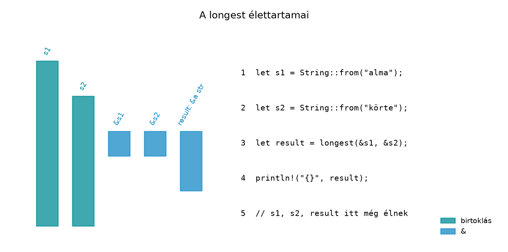

A C++-ban a std::string_view és a std::span
rendkívül kényelmes: nulla költségű „nézet” egy meglévő pufferre. A
modern C++-ban szinte mindenhol ezeket használjuk a
const std::string& helyett, mert nem igényelnek
másolást, és egységes felületet adnak a különböző konténerekre. A
kényelemnek azonban ára van: a fordító nem ellenőrzi, hogy a nézet által
hivatkozott adat tovább él-e. Lógó string_view-t létrehozni
triviális, és a hiba csak futásidőben, gyakran rejtélyes
memóriasérülésként jelentkezik. A Rust válasza erre a
élettartam-annotáció (lifetime annotation): a függvény
szignatúrája explicit szerződést tartalmaz arról, hogy a bemeneti
referenciák és a kimeneti referencia között milyen érvényességi
kapcsolat áll fenn. Ez a szerződés fordításkor ellenőrizhető, így a lógó
referencia pontos típusú hibája már a fordítás során kiderül.
Definíció. Élettartam-paraméternek
(lifetime parameter) nevezzük a függvény szignatúrájában szereplő
'a alakú azonosítót, amely a bemeneti és kimeneti
referenciák közötti érvényességi kapcsolatot írja le. Az
élettartam-paraméter nem hoz létre élettartamot,
nem hosszabbítja meg egyetlen referencia érvényességét
sem, és nincs futásidejű reprezentációja; kizárólag a fordító számára
szolgáló statikus kapcsolatot fejez ki.
Szabály. Az élettartam-annotáció csak összefüggést
ír le: a visszaadott referencia élettartama legalább egy olyan
tartomány, amely a bemeneti referenciák közül a legrövidebb
élettartammal egyező. A 'a tehát úgy olvasható, hogy
„legalább ennyi ideig érvényes”. Ha a függvény két &'a
referenciát kap, a visszaadott 'a referencia érvényessége a
kettő közös metszetére korlátozódik.
A Rustban az élettartam-annotációk elhagyhatóak, ha a fordító egyértelműen ki tudja következtetni őket. Ezt az egyszerűsítést lifetime elision-nek nevezzük. A Rust Reference három szabályt rögzít:
&T bemenet &'a T-ként, a
&mut T bemenet &'a mut T-ként
értelmeződik.fn first(s: &str) -> &str explicit annotáció
nélkül.&self vagy &mut self (metódus esetén),
akkor a kimeneti referencia a self élettartamát kapja.
Ezért a fn get(&self, key: &str) -> &str
típusú metódusoknál sem kell explicite kiírni az élettartamot.Ha a három szabály együttesen sem ad egyértelmű eredményt – például két önálló bemeneti referencia és egy kimeneti referencia esetén –, a fordító hibát jelez, és explicit annotációt kér.
Definíció. Élettartam-altípusosság
(lifetime subtyping): ha 'long élettartam legalább olyan
hosszú, mint 'short, akkor &'long T
altípusa &'short T-nek. Ezt úgy is olvashatjuk, hogy a
hosszabb élettartamú referencia „elfér” ott, ahol rövidebbet várnak. Ez
az implicit rövidítés teszi lehetővé, hogy két, eltérő élettartamú
referencia közös 'a paraméterrel kerüljön egy függvénybe: a
hosszabb referencia élettartama automatikusan a rövidebbikkel közös
metszetre szűkül.
A leggyakoribb C++-os lógó nézet:
#include <string>
#include <string_view>
std::string_view longest(std::string_view x, std::string_view y) {
return x.size() > y.size() ? x : y;
}
int main() {
std::string s1 = "alma";
std::string_view result;
{
std::string s2 = "körte";
result = longest(s1, s2); // s2 megsemmisül a blokk végén
}
// result itt lógó nézet; a használata nem definiált viselkedés
return 0;
}A C++-fordító semmilyen figyelmeztetést nem ad; a
string_view nem tud a hivatkozott adat tulajdonosáról. A
Rust megfelelő:
fn longest<'a>(x: &'a str, y: &'a str) -> &'a str {
if x.len() > y.len() { x } else { y }
}
fn main() {
let s1 = String::from("alma");
let result;
{
let s2 = String::from("körte");
result = longest(&s1, &s2); // fordítási hiba: s2 nem él elég sokáig
}
println!("{}", result);
}A Rust-fordító a hívó oldalán ellenőrzi, hogy a közös 'a
élettartam lefedi-e a result használatát. Mivel
s2 a belső blokk végén megsemmisül, a közös élettartam nem
terjed ki a println! soráig, ezért a program nem fordul le.
A hibaüzenet lényege (verziófüggő szöveggel): a s2 változó
nem él elég sokáig.
longest függvény élettartam-annotációjaVegyük a longest függvényt annotáció nélkül:
// Ez a változat szándékosan nem fordul le:
fn longest(x: &str, y: &str) -> &str {
if x.len() > y.len() { x } else { y }
}A hibakód az E0106, a hibaüzenet lényege: a visszatérési típus
kölcsönzött értéket tartalmaz, de a szignatúra nem mondja meg, hogy a
referencia x-ből vagy y-ból származik-e.
Pontosan ez az a helyzet, ahol az elision három szabálya nem
alkalmazható: két bemeneti élettartam-paraméter van, és nincs
&self.
A javítás egyetlen 'a paraméter bevezetése:
fn longest<'a>(x: &'a str, y: &'a str) -> &'a str {
if x.len() > y.len() { x } else { y }
}
fn main() {
let s1 = String::from("alma");
let s2 = String::from("körte");
let result = longest(&s1, &s2);
println!("A hosszabb: {}", result);
}A szignatúra kimondja: a visszaadott &'a str
pontosan addig érvényes, ameddig mindkét bemeneti
&'a str is érvényes. A hívó oldalán a borro checker
kiszámolja, hogy s1 és s2 közös élettartama a
main függvény végéig tart, így a result
használata biztonságos.
Az alábbi diagram a hívó oldal élettartamait mutatja:

A diagramon a result sávja a longest
hívásától a használatig tart, és mindkét bemeneti referencia sávjával
közös metszetben van. Amint az egyik bemeneti élettartam megszűnik, a
közös metszet is véget ér; a korábbi, hibás kódban a s2
belső blokkja miatt ez a metszet a println! előtt
lezárult.
Az elision nem nyelvtani kivétel, hanem a szignatúrából egyértelműen következő írásforma. Tekintsük a következő eseteket:
// 2. szabály: egyetlen bemeneti élettartam.
fn first_word(s: &str) -> &str {
s.split_whitespace().next().unwrap_or(s)
}
// 3. szabály: &self meghatározza a kimenetet.
struct Parser<'a> {
text: &'a str,
}
impl<'a> Parser<'a> {
fn text(&self) -> &'a str {
self.text
}
// Az elision szerint a kimenet &self élettartamát kapja,
// tehát az explicit 'a a visszatérési típusban felesleges.
}A Parser<'a> esetében a text metódus
visszatérési típusa &'a str, míg az elision a
&self élettartamát adná. Itt a két élettartam általában
egybeesik, de ha a Parser élettartam-paramétere hosszabb,
mint a konkrét &self kölcsönzés, a különbség számíthat.
A fenti kód explicit annotálása egyértelművé teszi, hogy a visszaadott
&str a Parser-ben tárolt szövegre mutat,
nem pedig a Parser objektum kölcsönzésére. A Rust Reference
szerint a harmadik elision-szabály a &self élettartamát
alkalmazza, ezért ha fn text(&self) -> &str
lenne a szignatúra, az elision a &self élettartamát
választaná; a 'a explicit megadása a tervezett,
struktúrában tárolt referencia élettartamát köti ki.
Továbbvitt eredmény. Az itt megismert
élettartam-annotációkat és elision-szabályokat alkalmazzuk a referenciát
tartalmazó struktúrák tervezésekor a Referenciát
tartalmazó struktúrák, ’static és tervezési döntések alfejezetben, a
String és &str közötti konverziók és
élettartamok elemzésénél a Slice-ok, String és
&str, UTF-8 alfejezetben, valamint saját iterátorok
next() metódusának szignatúrájánál a Closure-ök és iterátorok: lusta adapterek és saját
iterátor alfejezetben.
Tegyük fel, hogy egy függvény &'short str-t vár, és
egy hosszabb élettartamú &'long str-t adunk át. A
hosszabb referencia automatikusan „rövidül”, mert a hívott függvény csak
a rövidebb intervallumig használhatja. Ezért van az, hogy ugyanaz a
longest függvény hívható különböző élettartamú
bemenetekkel: mindkettőt a közös 'a-ra szűkíti. A hosszabb
élettartamú referencia altípusa a rövidebbnek, ezért az átadás
biztonságos.
A longest szignatúrájában az x és
y ugyanazt az 'a paramétert viseli. Ha a
hívónál x élettartama hosszabb, akkor a fordító implicit
módon a rövidebb élettartamra szűkíti. Ez nem változtat a tényleges
élettartamon, csupán a statikus ellenőrzésben használt intervallumot
csökkenti. A visszaadott &'a str ezáltal a rövidebb
élettartamot örökli, tehát a függvény után sem használhatjuk tovább
annál, mint ami a rövidebb bemenetre érvényes.
'static
szerepeA 'static élettartam azt jelenti, hogy a referencia az
egész program futásáig érvényes. Ilyenek például a string-literálok
("alma" típusa &'static str), illetve a
kódba égetett konstansok. A 'static nem azt jelenti, hogy
az érték a stack-en vagy a heap-en van, hanem kizárólag az élettartam
hosszáról szól.
fn static_példa() -> &'static str {
"ez a szöveg a binárisban él"
}
fn main() {
let s = static_példa();
println!("{}", s);
}A 'static akkor hasznos, amikor a visszaadott referencia
tényleg a program teljes élettartamára érvényes, például globális
konfigurációk, literálok vagy kiszivárogtatott memória esetén. Általában
nem szabad minden élettartam-problémát 'static-kal
„megoldani”, mert az a lógó referencia-probléma futásidejű eltolását
vagy memóriaszivárgást eredményez.
1. Explicit annotáció elhagyása, amikor a fordító
kéri. A leggyakoribb hiba, hogy a fejlesztő a C++-os
szignatúra-logikát viszi tovább:
fn combine(x: &str, y: &str) -> &str. A
Rust-fordító azonnal E0106 hibával jelzi, hogy nem tudja, a kimeneti
referencia melyik bemenetből származik. A megoldás a 'a
paraméter bevezetése és a kapcsolat kimondása.
2. Az élettartam meghosszabbításának téves hite.
Gyakori tévhit, hogy a 'a paraméter meghosszabbítja a
reference érvényességét. Valójában nincs ilyen hatása: ha a bemeneti
referencia érvényessége lejár, a kimeneti referencia is érvénytelenné
válik, amely a fordító hibájaként jelenik meg. Az „élettartam
meghosszabbítás” csak nagyon korlátozott, nyelv által szabályozott
esetekben fordul elő (például ideiglenes értékek kötése bizonyos
referencia-kontextusokban), de az annotáció ezt nem befolyásolja.
3. Túlzott 'static használata. Amikor
egy függvény visszaad egy referenciát, amely valójában csak a bemenetek
élettartamához kötött, a 'static ráírásával a kód
lefordulhat, de a hívó oldalán a borrow checker túl szigorúvá válik,
vagy a design memóriaszivárgást rejt. Például:
// Ez a változat lefordul, de elrejti a tényleges kapcsolatot.
fn longest_static(x: &'static str, y: &'static str) -> &'static str {
if x.len() > y.len() { x } else { y }
}Ez a függvény csak 'static élettartamú bemenetekkel
hívható, ami a gyakorlatban szinte soha nem szükséges, és a hívókat arra
kényszeríti, hogy 'static értékeket használjanak, ahelyett
hogy a kölcsönzött String-eket adnák át.
4. Felesleges annotáció, amikor az elision elegendő.
Az fn first<'a>(s: &'a str) -> &'a str
tökéletesen lefordul, de az elision szerint a
fn first(s: &str) -> &str ekvivalens, és
idiomatikusabb. A túlzott annotáció nem hiba, de zajossá teszi az API-t,
és csökkenti az olvashatóságot. Rust kódban az a jó gyakorlat, hogy csak
akkor írunk ki élettartam-annotációt, ha a fordító kéri, vagy ha a
kapcsolat nem egyértelmű.
a) Lefordul-e és miért?
Vizsgáld meg a következő függvények szignatúráit! Melyik fordul le, és melyik hibás? Indokold az elision szabályai alapján.
fn f1(s: &str) -> &str;
fn f2(x: &str, y: &str) -> &str;
fn f3(&self, key: &str) -> &str;
fn f4<'a>(x: &'a str, y: &str) -> &'a str;b) C++-kód átírása idiomatikus Rustra
A következő C++ függvény lógó nézetet eredményezhet. Írd át Rustra úgy, hogy a fordító garantálja az élettartam érvényességét, és magyarázd el, miért nem fordulna le a C++-logika szerinti szignatúra.
std::string_view first_or_second(std::string_view x, std::string_view y) {
return x.empty() ? y : x;
}c) Implementáció az rkv-ban
Az rkv Storage trait get metódusának
jelenlegi szignatúrája:
fn get(&self, key: &str) -> Result<Option<Vec<u8>>, Error>;Magyarázd el, miért nincs szükség explicit élettartam-annotációra
ebben a metódusban! Ezután írj egy segédfüggvényt az rkv-core crate-be
longest_key néven, amely két &str kulcs
közül a hosszabbat adja vissza, explicit annotációval. A függvényt
illeszd be a lib.rs modulba, és írj hozzá egy
egységtesztet.
d) Hibajavítás és refaktorálás
Az alábbi kód nem fordul le. Javítsd ki, majd refaktoráld idiomatikusabb formára, ha lehet:
fn pick<'a>(x: &'a str, y: &'a str) -> &'a str {
if x < y { x } else { y }
}
fn main() {
let s1 = String::from("a");
let result;
{
let s2 = String::from("b");
result = pick(&s1, &s2);
}
println!("{}", result);
}a)
f1 lefordul: egyetlen bemeneti élettartam van, az
elision 2. szabálya érvényesül.f2 nem fordul le: két bemeneti élettartam és kimeneti
referencia; az elision nem tudja eldönteni.f3 lefordul, ha metódusról van szó: a 3. szabály a
&self élettartamát adja a kimenetnek.f4 lefordul: az x élettartama explicit
'a, az elision az y-t '_-vel
látja el, és a kimenet 'a-hoz kötött. Bár az y
élettartama nincs jelölve, a visszaadott referencia kizárólag
x-hez kötött, így a kapcsolat egyértelmű.b)
C++-logika szerinti szignatúra
fn first_or_second(x: &str, y: &str) -> &str
nem fordul le E0106 hibával. A Rust-megfelelő:
fn first_or_second<'a>(x: &'a str, y: &'a str) -> &'a str {
if x.is_empty() { y } else { x }
}
fn main() {
let s1 = String::from("");
let s2 = String::from("érték");
let result = first_or_second(&s1, &s2);
println!("{}", result);
}A 'a kimondja, hogy a visszaadott referencia legalább
addig érvényes, amíg mindkét bemeneti élettartam közül a rövidebb. A
C++-ban a string_view nem hordoz ilyen kapcsolatot, ezért a
fordító nem tudja ellenőrizni.
c)
A get metódusban az elision 3. szabálya érvényesül: a
visszaadott Result nem tartalmaz referenciát, tehát a
kimeneti élettartam nem is releváns; a key: &str
bemeneti referencia élettartama csak a híváson belül kötött. Az elision
itt nem kér explicit annotációt, mert a metódus
&self-et és egy &str-t vesz, és a
self élettartama az output típusában nem szerepel.
A longest_key segédfüggvény az rkv-core
lib.rs fájljában:
pub fn longest_key<'a>(a: &'a str, b: &'a str) -> &'a str {
if a.len() >= b.len() { a } else { b }
}
#[cfg(test)]
mod tests {
use super::*;
#[test]
fn longest_key_returns_longer() {
let a = "short";
let b = "longer";
assert_eq!(longest_key(a, b), "longer");
}
}d)
A hiba oka, hogy a pick a közös 'a
élettartamot használja, de a hívónál a s2 a belső blokkban
megsemmisül, ezért a result értékére a blokk után
hivatkozni nem lehet. A javítás: a result használatát a
belső blokkba kell hozni.
fn pick<'a>(x: &'a str, y: &'a str) -> &'a str {
if x < y { x } else { y }
}
fn main() {
let s1 = String::from("a");
{
let s2 = String::from("b");
let result = pick(&s1, &s2);
println!("{}", result);
}
}A refaktorálás során az explicit 'a annotáció szükséges,
mert két bemeneti referencia van. Nincs további egyszerűsítési
lehetőség, hacsak a logikát nem kötjük egyetlen
&self-hez.
Az élettartam-annotáció ('a) kizárólag statikus
kapcsolatot ír le a bemeneti és kimeneti referenciák között; nem
hosszabbítja meg az élettartamot, és nincs futásidejű reprezentációja. A
longest(x, y) klasszikus példája két bemeneti referenciát
és egy kimeneti referenciát köt össze, ezért explicit 'a
paramétert igényel, mert az elision szabályai nem tudják egyértelműen
meghatározni. Az elision három szabálya: (1) minden bemeneti referencia
külön élettartamot kap, (2) egyetlen bemeneti élettartam esetén az
output ezt örökli, (3) &self vagy
&mut self esetén az output a self
élettartamát kapja. A 'static kizárólag a program teljes
élettartamát jelöli, és nem szabad általános megoldásként használni. Az
élettartam-altípusosság szemléletesen azt jelenti, hogy a hosszabb
élettartamú referencia ott is használható, ahol rövidebbet várnak, így a
longest hívásánál a hosszabb bemenet automatikusan a
rövidebb metszetére szűkül. Továbbvitt eredmény: az itt
megismert annotációk és elision-szabályok alapjait használjuk a
referenciát tartalmazó struktúrák (r017), a
String/&str konverziók (r018)
és a saját iterátorok (r029) tervezésekor.
A Rust élettartam- és elision-szabályai stabil nyelvi elemek, a Rust
Reference „Lifetime elision” szakaszában és a Rust Book generikus
élettartamokról szóló fejezetében találhatók. A hibaüzenetek pontos
szövege Rust-verziónként változhat, ezért a példákban a hibakódot
(E0106) és a hiba lényegét adtuk meg. A std::string_view
lógó referencia-viselkedése C++17-ben érvényes; a példa az undefined
behavior illusztrálására szolgál, nem megengedett kód. A crate-verziókra
és a docs.rs API-ellenőrzésre vonatkozó megjegyzések az rkv-projekt
kontextusában a workspace Cargo.toml fájljában
találhatók.